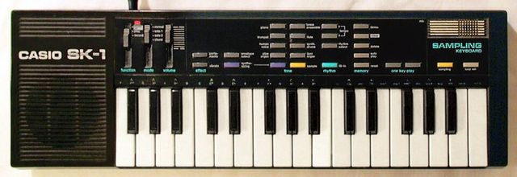

Scheda 083 · 1985 · Giappone
Casio SK-1
Gli Autechre ci rovesciano sopra una bibita, e da quel giorno si modifica da solo
Una tastierina a pile con un microfono in un angolo, che registra 1,4 secondi di qualunque cosa.
Il suono vero · 0:37
I ritmi di fabbrica di uno SK-1 vero, con le loro variazioni, messi in fila da Make Noise: la batteria interna, non un campione.
0:00 / 0:37
Registrazione di Make Noise (makenoisemusic) · CC0 · Freesound · estratto di 37 s, volume normalizzato
- USCITA
- 1985
- CAMPIONE
- 1,4 s
- RISOLUZIONE
- 8 bit
- TASTI
- 32
La macchinaChe cos'è
Sono 32 tasti piccoli, un altoparlante a sinistra e il microfono nell'angolo in alto a destra. Premete il tasto giallo, fate un rumore, e il rumore finisce sotto i tasti, da suonare fino a 4 note per volta. Il campione dura al massimo 1,4 secondi e quando spegnete sparisce. Poi ci sono 8 suoni di fabbrica, dal pianoforte alla voce umana, e 11 ritmi. Sul prezzo le riviste inglesi del 1986 non concordano, Making Music scrive 119 sterline e International Musician 89. A me sembra ancora il modo più rapido per capire cos'è un campionatore.
Chi l'ha costruitaCasio, la casa delle calcolatrici
Chi l'abbia disegnato non sono riuscito a scoprirlo. Casio fa calcolatrici, e il primo strumento lo mette in vendita nel gennaio 1980. È il Casiotone 201, voluto da Toshio Kashio, uno dei fratelli che hanno fondato la ditta. Lo SK-1 arriva qualche anno dopo. Wikipedia e Vintage Synth Explorer dicono 1985, le recensioni inglesi sono del 1986 e Reed Ghazala, l'uomo che ha dato il nome al circuit bending, se lo ricorda nei negozi nel 1986. Nel dicembre 1996 proprio Ghazala gli dedica un articolo intero su Experimental Musical Instruments, con 36 modifiche da fare col saldatore.
Come funzionaCosa c'è dentro
Campionare vuol dire misurare. Lo SK-1 ascolta il microfono e ne prende il livello 9.380 volte al secondo, e ogni misura è un numero di 8 bit, uno fra 256. A quella velocità sopra i 4.500 hertz circa non passa niente, ed è per questo che tutto quello che registra sembra uscito da una radiolina. Gli altri suoni si cambiano con 13 inviluppi, che toccano attacco e coda anche del campione. E con 9 tasti bianchi si sommano armoniche a una nota d'organo, come i registri di un Hammond in miniatura. Provate il Loop, il pezzo registrato ricomincia finché tenete giù il tasto.
Chi l'ha usataNei dischi
- Autechrefra i loro primi attrezzi, con una TR-606, uno SK-5 e un delay Boss
L'aneddotoUna storia
Novembre 1997. Christopher Holder va a intervistare gli Autechre per Sound On Sound, e prima delle domande si ritrova davanti uno SK-1 aperto. Gli fanno fare il giro delle viscere. Uno dei due gli indica un chip e spiega che collegando 2 di quei punti i campioni si incrociano fra loro. Il progetto è montare sul retro un selettore che si sposti da un punto all'altro, così da non dover più aprire la scatola. Vent'anni dopo FACT mette lo SK-1 fra i 7 attrezzi che hanno fatto il suono degli Autechre.
Avvertenze
Il campione vive finché c'è corrente. Prima di cambiare le pile, registrate su un'altra cosa quello che vi serve.
Il carosello · si aprono in grande
Le 6 tavole
Da dove viene
Fonti
- «Casio SK-1» — Wikipedia (EN) verificata il 2026-11-06
- «Casio SK-1» — Vintage Synth Explorer verificata il 2026-11-06
- «Casio SK1», Paul Colbert — Making Music, luglio 1986 verificata il 2026-11-06
- «Casio SK-1», Jim Betteridge — International Musician, novembre 1986 verificata il 2026-11-06
- «The Casio SK-1: Escapist Sample Shuttle», Reed Ghazala — Experimental Musical Instruments, 1996 verificata il 2026-11-06
- «Reed Ghazala» — Wikipedia (EN) verificata il 2026-11-06
- Casiotone 201 — Casio, 40 anni di strumenti verificata il 2026-11-06
- «Exploring Casio's 40 years» — MMR Magazine verificata il 2026-11-06
- «Autechre: Techno Logical», Christopher Holder — Sound On Sound, novembre 1997 verificata il 2026-11-06
- «Designing chaos», Scott Wilson — FACT, 25/02/2017 verificata il 2026-11-06
- Autechre, intervista di Tom Murphy — Westword, 16/10/2015 verificata il 2026-11-06
Foto: Vlad Spears (ritaglio di Clusternote) · CC BY-SA 2.0 · Wikimedia Commons
Foto nelle tavole: Jon Seidman · CC BY 2.0 · Wikimedia Commons
Suono: Registrazione di Make Noise (makenoisemusic) · CC0 · Freesound · estratto di 37 s, volume normalizzato